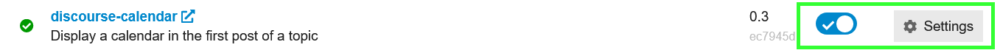

| Summary | Discourse Calendar and Event adds dynamic and interactive calendar and event features to your Discourse site. | |
| Install Guide | This plugin is bundled with Discourse core. There is no need to install the plugin separately. |
Enabling Calendar (and Event)
The Calendar plugin can be enabled either by the toggle or from its settings, both accessible from your admin/plugins page:

Features
Somewhat unsurprisingly, Discourse Calendar (and Event) adds both the calendar and event features to your Discourse site. With these, you can create individual topic calendars to track important occasions or timelines, display calendars in categories, add a holiday calendar to mark vacations, absences, or sick days, create interactive event topics, as well as show an easy-access calendar summary of all of your upcoming events.
Calendars
Bespoke calendars can be created in multiple topics, and ones you wish to give higher visibility to can be displayed above a category’s topic list.
You can find more detailed information on how to create and use calendars in:
Events
The Event feature allows interactive elements to be inserted into topics which your members can use to sign up to attend or participate in your community’s activities. These are all summarised in a dedicated site-wide calendar, with the option to add an easy-access link to your navigation menu. You can find more information on how to create and use this feature in:
This should not be confused with Pavilion’s Events plugin (note the plural)
Calendar Settings
| Name | Description |
|---|---|
| calendar enabled | Enable the discourse-calendar plugin. This will add support for a [calendar][/calendar] tag in the first post of a topic. |
| holiday calendar topic id | Topic ID of staffs holiday / absence calendar. |
| holiday status emoji | Defines the emoji used for the holiday status. |
| delete expired event posts after | Posts with expired events will be automatically deleted after (n) hours. Set to -1 to disable deletion. |
| all day event start time | Events that do not have a start time specified will start at this time. Format is HH:mm. For 6:00 am, enter 06:00 |
| all day event end time | Events that do not have a end time specified will end at this time. Format is HH:mm. For 6:00 pm, enter 18:00 |
| calendar categories | Display a calendar at the top of a category. Mandatory settings are categoryId and postId. eg: categoryId=6;postId=453[1] Other valid settings: tzPicker[2], weekends[3] and defaultView[4]. |
| calendar categories outlet | Allows to change which outlet should show the category calendar. |
| working days | Set working days. You can display the availability of a group using the timezones tag in a post, eg: [timezones group=admins][timezones]
|
| working day start hour | Start time of the working day hours. |
| working day end hour | End time of the working day hours. |
| close to working day hours extension | Set extension time in working day hours to highlight the timezones. |
| calendar automatic holidays enabled | Automatically set holiday status based on a users region (note: you can disable specific automatic holidays in plugin settings) |
| map events title | Maps title of the sidebar calendar based on category. Defaults to “Upcoming events” |
Event Settings
| Name | Description |
|---|---|
| discourse post event enabled | Enables the Event features. Note: also needs calendar enabled to be enabled. |
| discourse post event allowed on groups | Groups that are allowed to create events. |
| displayed invitees limit | Limits the numbers of invitees displayed on an event. |
| display post event date on topic title | Displays the date of the event after the topic title. |
| use local event date | Use local date after topic title instead of relative time. |
| discourse post event edit notifications time extension | Extends (in minutes) the period after the end of an event when going invitees are still being notified from edit in the original post. |
| discourse post event allowed custom fields | Allows to let each event to set the value of custom fields. |
| events calendar categories | Display an events calendar at the top of a category. |
| sort categories by event start date enabled | Enable the sorting of category topics by event start date. |
| disable resorting on categories enabled | Allow categories to disable the ability for users to sort on the event category. |
| sidebar show upcoming events | Show upcoming events link in the sidebar under ‘More’. Requires post event enabled
|
| map events to color | Assigns an event color to a specified tag or category |
The
discourse-post-event/events.jsonendpoint now has an added parameter to switch between simple and detailed response. To get the detailed response you can add?include_details=true:
/discourse-post-event/events.json?include_details=true
Integrations with Other Plugins
You can use a component from this plugin with Right Sidebar Blocks. You’ll want to ensure the desired route is enabled in the Right Sidebar Blocks component. The block name will be upcoming-events-list. Historically, there were additional settings required in the Calendar plugin itself, but this has been streamlined.
This is how the sidebar calendar will appear by default.
If you don’t want the time, you can add an empty timeFormat value in the component’s block setting.
Hosted by us? This plugin is available on our Business and Enterprise tiers Calendar | Discourse - Civilized Discussion
-
categoryId is the category the calendar will be displayed on top of.
postId is the post in which you put the calendar in with[calendar][/calendar]↩︎ -
it can display a time zone picker on the upper right of the calendar. False by default, you can enable it with
tzPicker=true↩︎ -
it can hide Saturdays and Sundays from the calendar. True by default. You can set it to false with
weekends=false. ↩︎ -
defaultView will set the calendar’s view (day, week, etc;). It can be set as:
defaultView=agendaDay
defaultView=agendaWeek
defaultView=month(default)
defaultView=listNextYear↩︎
Last edited by @tobiaseigen 2025-07-16T21:10:06Z
Check document
Perform check on document:


{kind=link}
{kind=link}
{kind=link}
{kind=link}
{kind=link}
{kind=link}
{kind=link}
{kind=link}
{kind=link}
{kind=link}
{kind=link}
{kind=link}
{kind=link}
{kind=link}
{kind=link}
{kind=link}
{kind=link}
{kind=link}
{kind=link}
{kind=link}
{kind=link}
{kind=link}
{kind=link}
{kind=link}
{kind=link}
{kind=link}
{kind=link}
{kind=link}
{kind=link}
{kind=link}
{kind=link}
{kind=link}
{kind=link}
{kind=link}
{kind=link}
{kind=link}
{kind=link}
{kind=link}
{kind=link}